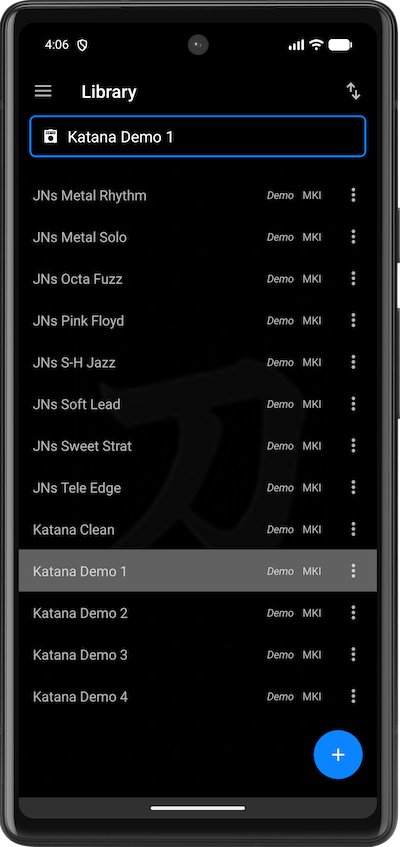
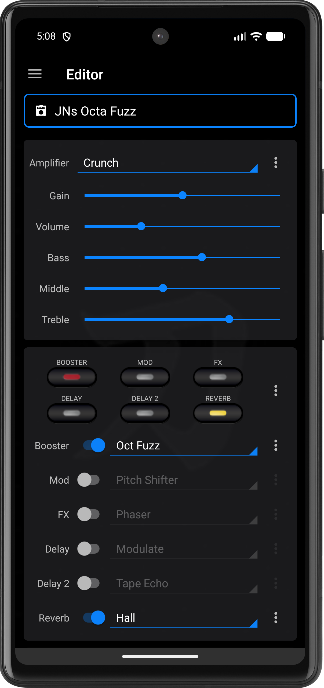
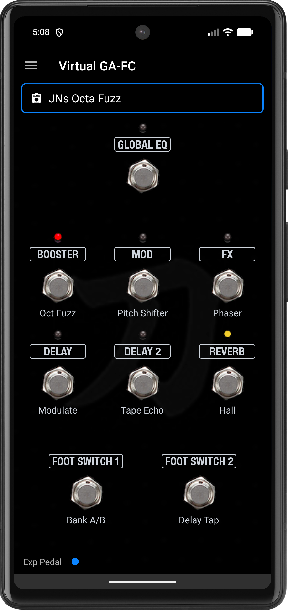
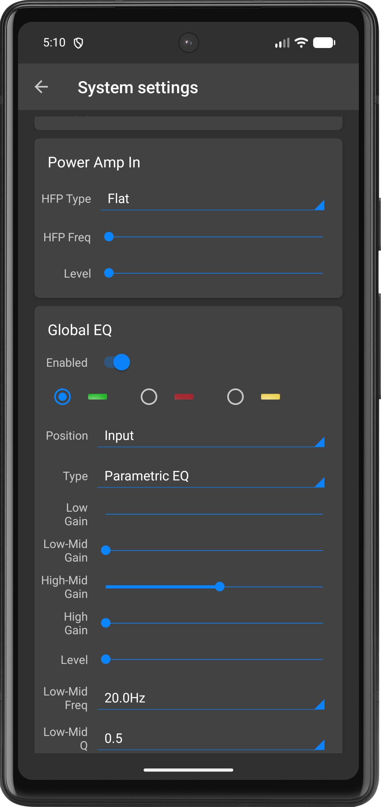

Edit in real time
Change patch parameters with support for all effect types. The editor reflects changes as you adjust your amp.
Take control of your BOSS Katana. Edit tones in real time, organize patches, build set lists, write channels, and unlock deeper amp control from the device already in your hand.
Katana Librarian turns your phone or tablet into a dedicated control center for your amplifier.
Change patch parameters with support for all effect types. The editor reflects changes as you adjust your amp.
Download patches, group sounds, and create set lists for live performance.
Import, export and translate between MkI, MkII, Gen3 and GO patch formats.
Emulate the functionality of a GA-FC pedal, even on KATANA-50 and KATANA:GO models.
Use hotkeys with compatible Bluetooth MIDI or HID foot switches for patch and effect switching.
Download patches directly from BOSS Tone Exchange (Roland sign-in required).
Experiment at home, dial in at rehearsal, or make a last-second change on stage.




Katana Librarian has been helping guitarists find their tone since 2018. Along the way we've also assisted companies like XSONIC and CME add Katana support to their products.
Try Katana Librarian free: test your connection and load the demo patches. Unlock the full feature set with a single purchase when you're ready. No subscription required.
Connect directly with USB or via Bluetooth using an XSONIC Airstep, CME WIDI Uhost or BOSS BT-DUAL adapter.
Requires Android 5.0 or later.
Connect via Bluetooth using an XSONIC Airstep, CME WIDI Uhost or BOSS BT-DUAL adapter.
Requires iOS/iPadOS 15 or later.
Katana Librarian currently supports the following models:
No! We don't like subscription-based products. A one-time purchase gives you access to all the features and all future updates.
You need an Android device running Android 5.0 or above with USB Host Mode support, and an appropriate cable.
For MkI and MkII amps:
If your phone has a USB Type-C connector you may be able to use a single USB C-to-B cable, provided that cable adheres to the "USB Type-C to USB 2.0 Standard-B Cable Assembly" specification. Many USB C-to-B cables on the market are non-compliant, and your device will not switch into USB Host Mode as a result.
For Gen3 amps and the KATANA:GO:
You need an Android device running Android 6.0 or above.
For MkI and MkII amps, a compatible USB-to-Bluetooth bridge device:
For Gen3 amps, a compatible USB-to-Bluetooth bridge device:
To connect using Bluetooth, you need an iPhone or iPad running iOS/iPadOS® 15.0 or above.
For MkI and MkII amps, a compatible USB-to-Bluetooth bridge device:
For Gen3 amps, a compatible USB-to-Bluetooth bridge device:
USB connections are not supported by the iOS version of Katana Librarian, as Apple puts restrictions on the types of MIDI devices that can connect to iOS over USB. Only class-compliant devices are allowed, and the Katana is not class-compliant.
The iOS version of Katana Librarian can also run on Apple-silicon based Mac computers as a "Designed for iPad" application. To connect on macOS you must first use the "Audio MIDI Setup" app to pair the Bluetooth adapter with macOS.
Yes. Purchases can be shared across devices, so long as those devices are all signed into the same account. Keep in mind it can take some time to sync new purchases across your devices. Accounts are not shared between the Apple and Google ecosystems.
No. As long as you are signed into the same account, all of your purchases will transfer over automatically. Accounts are not shared between the Apple and Google ecosystems.
Patches and groups can be transferred to another device running Katana Librarian using the Backup/Restore functionality available in Settings.
Yes! However, you must first install the Google Play Store app and services on your tablet. There are lots of guides available on the internet to assist with this process; here is one.
Yes, as long as your Chromebook supports running Android apps. A compatible Bluetooth adapter is required to connect to your amp. USB connections are not supported, as ChromeOS does not currently support USB host mode for Android apps.
Most connection issues are due to cabling problems. First, make sure you have the correct cables, as specified above. If the amp still won't connect, try installing the USB Device Info app. With it installed and the amp connected, a working setup shows a device listed as vendor BOSS, product KATANA, with the vendor ID 0582.
You can also plug a USB thumb drive or USB mouse into your USB OTG adapter. If your cabling is working, your device should automatically recognize the thumb drive or mouse.
If you have a Katana Gen 3, it must be in the "Vendor" USB mode. This is the default mode and doesn't normally need to be changed. See "How to select USB driver" in the product manual.
If you still have connection issues, please contact us at apps4amps@gmail.com and we'll attempt to help you troubleshoot.
Once you have modified a patch, a Download icon appears next to the patch name at the top of the screen. Click on the icon to save the patch to the library.
"Sneaky amps" are amplifier models that are built into the Katana MkI and MkII amps, but not exposed in BOSS Tone Studio. There are multiple theories as to why they were not exposed, but only BOSS knows for sure. They are not documented or supported by BOSS, and may get removed in future amplifier firmware updates. You can easily access them using Katana Librarian: they are present in the Amplifier drop-down list after the standard built-in amps.
The MkI amps also contain several "sneaky effects", like Tera Echo. These were removed in the MkI v4 firmware; if you are running older firmware they will be accessible in Katana Librarian.
The Katana has a number of preset chains that specify the arrangement of the effects in the signal chain. On MkI and MkII amps, Katana Librarian allows you to go further and rearrange the chain in any order you wish. Just drag and drop the effect you wish to move.
If you import a patch which contains a custom chain into BOSS Tone Studio, the chain data may be ignored. Again, this feature is not documented or supported by BOSS, and may get removed in future amplifier firmware updates.